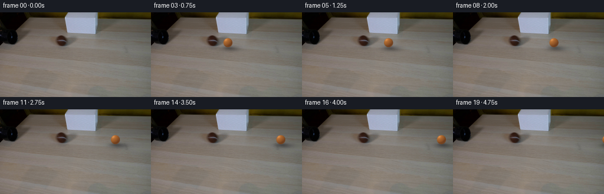
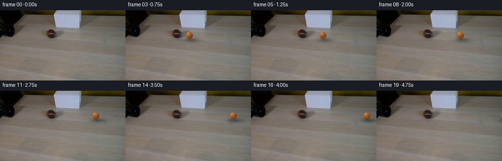
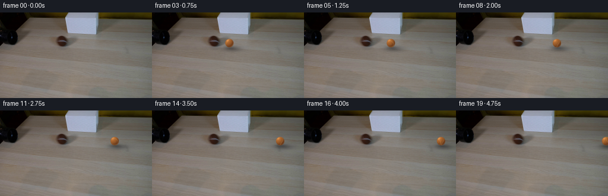
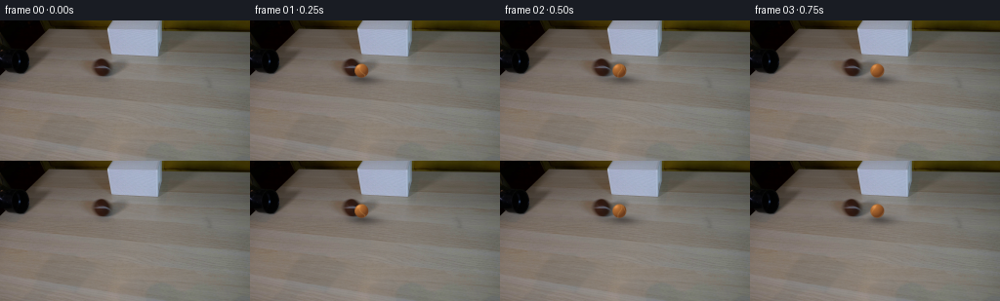

CODING AGENTS AS PIXEL WORLD MODELS
traex/DeepSeek-V4.1-Flash · 0150
点击播放 · 原生 RGB 像素
逐轮保存的候选
回放视频、检查图与代码变化。
每份候选均可单独播放。实际图片检查记录在下方工具轨迹中。
候选 01播放与检查图
点击播放 · 原生 RGB 像素

展开代码变化
--- 上一保存版本
+++ 本次保存版本
@@ -0,0 +1,191 @@
+from pathlib import Path
+
+import numpy as np
+from PIL import Image
+from scipy.ndimage import gaussian_filter
+
+import artifact_io
+
+
+CASE_DIR = Path(__file__).resolve().parent
+WIDTH = 256
+HEIGHT = 144
+FRAMES = 20
+
+
+def _smoothstep(edge0, edge1, x):
+ t = np.clip((x - edge0) / (edge1 - edge0), 0.0, 1.0)
+ return t * t * (3.0 - 2.0 * t)
+
+
+def _make_felt_noise():
+ rng = np.random.default_rng(150)
+ # The fine and broad fields give the ball a fibrous felt surface while
+ # remaining stable under its analytic roll.
+ fine = rng.normal(0.0, 1.0, (47, 61, 53))
+ broad = rng.normal(0.0, 1.0, (19, 23, 21))
+ return fine, broad
+
+
+def _sample_trilinear(field, x, y, z):
+ nx, ny, nz = field.shape
+ x = np.clip((x + 1.0) * 0.5 * (nx - 1), 0.0, nx - 1.001)
+ y = np.clip((y + 1.0) * 0.5 * (ny - 1), 0.0, ny - 1.001)
+ z = np.clip((z + 1.0) * 0.5 * (nz - 1), 0.0, nz - 1.001)
+ x0 = x.astype(np.int32)
+ y0 = y.astype(np.int32)
+ z0 = z.astype(np.int32)
+ x1, y1, z1 = x0 + 1, y0 + 1, z0 + 1
+ fx, fy, fz = x - x0, y - y0, z - z0
+
+ c00 = field[x0, y0, z0] * (1 - fx) + field[x1, y0, z0] * fx
+ c10 = field[x0, y1, z0] * (1 - fx) + field[x1, y1, z0] * fx
+ c01 = field[x0, y0, z1] * (1 - fx) + field[x1, y0, z1] * fx
+ c11 = field[x0, y1, z1] * (1 - fx) + field[x1, y1, z1] * fx
+ c0 = c00 * (1 - fy) + c10 * fy
+ c1 = c01 * (1 - fy) + c11 * fy
+ return c0 * (1 - fz) + c1 * fz
+
+
+def _render_shadow(base, cx, contact_y):
+ yy, xx = np.mgrid[:HEIGHT, :WIDTH]
+ # A soft cast shadow trails toward the lower right. The short, nearly
+ # horizontal core indicates contact with the tabletop.
+ dx = (xx - (cx + 3.6)) / 10.0
+ dy = (yy - (contact_y + 2.0)) / 3.1
+ core = np.exp(-0.5 * (dx * dx + dy * dy))
+ trail = np.exp(
+ -0.5
+ * (
+ ((xx - (cx + 8.0)) / 14.0) ** 2
+ + ((yy - (contact_y + 2.8)) / 2.7) ** 2
+ )
+ )
+ contact = np.exp(
+ -0.5
+ * (
+ ((xx - cx) / 6.1) ** 2
+ + ((yy - contact_y) / 1.65) ** 2
+ )
+ )
+ strength = 0.24 * gaussian_filter(core, 1.0) + 0.10 * gaussian_filter(
+ trail, 1.4
+ ) + 0.14 * gaussian_filter(contact, 0.65)
+ out = base.astype(np.float32)
+ out *= (1.0 - strength[..., None]).clip(0.0, 1.0)
+ # Slightly cool the penumbra, as in the source's diffuse room lighting.
+ out[..., 2] += strength * 4.0
+ return np.clip(out, 0.0, 255.0)
+
+
+def _render_ball(base, cx, cy, radius, roll_angle, felt_noise):
+ scale = 6
+ pad = 4.0
+ x0 = max(0, int(np.floor(cx - radius - pad)))
+ x1 = min(WIDTH, int(np.ceil(cx + radius + pad)))
+ y0 = max(0, int(np.floor(cy - radius - pad)))
+ y1 = min(HEIGHT, int(np.ceil(cy + radius + pad)))
+ if x0 >= x1 or y0 >= y1:
+ return base
+
+ w = (x1 - x0) * scale
+ h = (y1 - y0) * scale
+ sx = (np.arange(w, dtype=np.float32) + 0.5) / scale + x0
+ sy = (np.arange(h, dtype=np.float32) + 0.5) / scale + y0
+ xx, yy = np.meshgrid(sx, sy)
+
+ nx = (xx - cx) / radius
+ ny = (yy - cy) / radius
+ rr = nx * nx + ny * ny
+ inside = rr <= 1.0
+ nz = np.sqrt(np.clip(1.0 - rr, 0.0, 1.0))
+
+ # Rotate the material around the screen-normal axis as the ball rolls.
+ ca, sa = np.cos(roll_angle), np.sin(roll_angle)
+ qx = ca * nx + sa * ny
+ qy = -sa * nx + ca * ny
+ qz = nz
+
+ fine, broad = felt_noise
+ grain = _sample_trilinear(fine, qx * 1.2, qy * 1.2, qz * 1.2)
+ weave = _sample_trilinear(broad, qx * 1.35 + 0.3, qy * 1.35, qz * 1.35)
+
+ # The tennis-ball seam is two offset, gently S-shaped bands in spherical
+ # coordinates. It rotates with the same surface material as the felt.
+ u = np.arctan2(qy, qx)
+ v = np.arccos(np.clip(qz, -1.0, 1.0))
+ seam_a = np.abs(v - (1.14 + 0.34 * np.sin(2.0 * u + 0.5)))
+ seam_b = np.abs(v - (2.00 - 0.34 * np.sin(2.0 * u - 0.4)))
+ seam = np.exp(-((seam_a / 0.048) ** 2)) + np.exp(
+ -((seam_b / 0.048) ** 2)
+ )
+ seam = np.clip(seam, 0.0, 1.0)
+
+ # Key light comes from the upper left, with a soft bounce from the table.
+ light = np.array([-0.45, -0.62, 0.64], dtype=np.float32)
+ light /= np.linalg.norm(light)
+ ndl = np.clip(nx * light[0] + ny * light[1] + nz * light[2], 0.0, 1.0)
+ hemi = 0.33 + 0.24 * (0.5 + 0.5 * ny)
+ rim = 0.16 * np.power(np.clip(1.0 - nz, 0.0, 1.0), 1.7)
+ diffuse = 0.24 + 0.92 * ndl + hemi * 0.42
+ diffuse += 0.030 * grain + 0.024 * weave + rim
+
+ brown = np.array([153.0, 91.0, 42.0], dtype=np.float32)
+ warm_shadow = np.array([67.0, 33.0, 17.0], dtype=np.float32)
+ color = warm_shadow[None, None, :] + (
+ brown - warm_shadow
+ )[None, None, :] * np.clip(diffuse[..., None], 0.0, 1.35)
+
+ # Felt seam is a slightly pale, flattened ridge, not a hard painted line.
+ seam_color = np.array([197.0, 139.0, 76.0], dtype=np.float32)
+ color = color * (1.0 - 0.24 * seam[..., None]) + seam_color * (
+ 0.24 * seam[..., None]
+ )
+
+ # A restrained highlight makes the sphere read as a soft felt ball.
+ spec = np.power(np.clip(ndl, 0.0, 1.0), 18.0) * 0.16
+ color += spec[..., None] * np.array([255.0, 230.0, 194.0])
+
+ # Tiny silhouette fuzz: the edge is softened and feathered irregularly.
+ edge_dist = (1.0 - np.sqrt(rr)) * radius
+ edge_noise = _sample_trilinear(fine, qx * 2.7, qy * 2.7, qz * 2.7)
+ alpha = _smoothstep(-0.45, 0.62 + 0.22 * edge_noise, edge_dist)
+ alpha *= inside
+
+ # Supersample down to the native frame resolution.
+ color = color.reshape(y1 - y0, scale, x1 - x0, scale, 3).mean((1, 3))
+ alpha = alpha.reshape(y1 - y0, scale, x1 - x0, scale).mean((1, 3))
+
+ out = base.astype(np.float32).copy()
+ region = out[y0:y1, x0:x1]
+ region[:] = region * (1.0 - alpha[..., None]) + color * alpha[..., None]
+ return np.clip(out, 0.0, 255.0)
+
+
+def generate_frames():
+ first = np.asarray(Image.open(CASE_DIR / "first_frame.png").convert("RGB"))
+ felt_noise = _make_felt_noise()
+ frames = np.empty((FRAMES, HEIGHT, WIDTH, 3), dtype=np.uint8)
+ frames[0] = first
+
+ # The ball is fully inside the tube at t=0. It clears the opening on the
+ # first interval and travels at constant speed across the remaining table.
+ start_x = 106.0
+ speed_per_frame = 8.15
+ center_y = 51.6
+ radius = 7.8
+ for index in range(1, FRAMES):
+ cx = start_x + speed_per_frame * index
+ contact_y = center_y + radius - 0.25
+ frame = _render_shadow(first, cx, contact_y)
+ roll_angle = -(cx - start_x) / radius
+ frame = _render_ball(
+ frame, cx, center_y, radius, roll_angle, felt_noise
+ )
+ frames[index] = np.rint(frame).astype(np.uint8)
+
+ return frames
+
+
+if __name__ == "__main__":
+ artifact_io.save(generate_frames(), CASE_DIR)
候选 02播放与检查图
点击播放 · 原生 RGB 像素

展开代码变化
--- 上一保存版本
+++ 本次保存版本
@@ -100,11 +100,13 @@
inside = rr <= 1.0
nz = np.sqrt(np.clip(1.0 - rr, 0.0, 1.0))
- # Rotate the material around the screen-normal axis as the ball rolls.
+ # Rotate the material about the screen-vertical axis as the ball rolls
+ # to the right. This moves the seam across the sphere instead of merely
+ # spinning it in the image plane.
ca, sa = np.cos(roll_angle), np.sin(roll_angle)
- qx = ca * nx + sa * ny
- qy = -sa * nx + ca * ny
- qz = nz
+ qx = ca * nx + sa * nz
+ qy = ny
+ qz = -sa * nx + ca * nz
fine, broad = felt_noise
grain = _sample_trilinear(fine, qx * 1.2, qy * 1.2, qz * 1.2)
@@ -173,7 +175,7 @@
start_x = 106.0
speed_per_frame = 8.15
center_y = 51.6
- radius = 7.8
+ radius = 7.2
for index in range(1, FRAMES):
cx = start_x + speed_per_frame * index
contact_y = center_y + radius - 0.25
候选 03播放与检查图

候选 04播放与检查图
点击播放 · 原生 RGB 像素

展开代码变化
--- 上一保存版本
+++ 本次保存版本
@@ -118,8 +118,8 @@
v = np.arccos(np.clip(qz, -1.0, 1.0))
seam_a = np.abs(v - (1.14 + 0.34 * np.sin(2.0 * u + 0.5)))
seam_b = np.abs(v - (2.00 - 0.34 * np.sin(2.0 * u - 0.4)))
- seam = np.exp(-((seam_a / 0.048) ** 2)) + np.exp(
- -((seam_b / 0.048) ** 2)
+ seam = np.exp(-((seam_a / 0.075) ** 2)) + np.exp(
+ -((seam_b / 0.075) ** 2)
)
seam = np.clip(seam, 0.0, 1.0)
@@ -139,9 +139,9 @@
)[None, None, :] * np.clip(diffuse[..., None], 0.0, 1.35)
# Felt seam is a slightly pale, flattened ridge, not a hard painted line.
- seam_color = np.array([197.0, 139.0, 76.0], dtype=np.float32)
- color = color * (1.0 - 0.24 * seam[..., None]) + seam_color * (
- 0.24 * seam[..., None]
+ seam_color = np.array([218.0, 174.0, 104.0], dtype=np.float32)
+ color = color * (1.0 - 0.48 * seam[..., None]) + seam_color * (
+ 0.48 * seam[..., None]
)
# A restrained highlight makes the sphere read as a soft felt ball.
@@ -173,7 +173,7 @@
# The ball is fully inside the tube at t=0. It clears the opening on the
# first interval and travels at constant speed across the remaining table.
start_x = 106.0
- speed_per_frame = 8.15
+ speed_per_frame = 7.75
center_y = 51.6
radius = 7.2
for index in range(1, FRAMES):
候选 05播放与检查图
候选 06播放与检查图
点击播放 · 原生 RGB 像素


展开代码变化
--- 上一保存版本
+++ 本次保存版本
@@ -139,9 +139,9 @@
)[None, None, :] * np.clip(diffuse[..., None], 0.0, 1.35)
# Felt seam is a slightly pale, flattened ridge, not a hard painted line.
- seam_color = np.array([218.0, 174.0, 104.0], dtype=np.float32)
- color = color * (1.0 - 0.48 * seam[..., None]) + seam_color * (
- 0.48 * seam[..., None]
+ seam_color = np.array([207.0, 159.0, 91.0], dtype=np.float32)
+ color = color * (1.0 - 0.34 * seam[..., None]) + seam_color * (
+ 0.34 * seam[..., None]
)
# A restrained highlight makes the sphere read as a soft felt ball.
@@ -173,11 +173,12 @@
# The ball is fully inside the tube at t=0. It clears the opening on the
# first interval and travels at constant speed across the remaining table.
start_x = 106.0
- speed_per_frame = 7.75
center_y = 51.6
radius = 7.2
for index in range(1, FRAMES):
- cx = start_x + speed_per_frame * index
+ # A very small rolling resistance slows the ball gradually while it
+ # remains in contact with the table.
+ cx = start_x + 8.20 * index - 0.025 * index * index
contact_y = center_y + radius - 0.25
frame = _render_shadow(first, cx, contact_y)
roll_angle = -(cx - start_x) / radius
可观测工具轨迹
实际执行的命令与返回图片。
命令 1exit 0
/bin/bash -c "pwd && rg --files -g '"'!*.pyc'"' -g '"'!__pycache__'"'"
命令 2exit 0
/bin/bash -c "sed -n '1,240p' prompt.txt"
命令 3exit 0
/bin/bash -c "sed -n '1,280p' GENERATION_RULES.md"
命令 4exit 0
/bin/bash -c 'ls -lah && file first_frame.png && identify first_frame.png 2>/dev/null || true'
命令 5exit 0
/bin/bash -c "python - <<'PY'
from PIL import Image
import numpy as np
im=Image.open('first_frame.png').convert('RGB')
a=np.array(im)
print(im.size, a.shape, a.dtype)
print('min/max', a.min(axis=(0,1)), a.max(axis=(0,1)), 'mean', a.mean(axis=(0,1)))
# coarse 16x9 block mean, printable categories based luminance and saturation
h,w=a.shape[:2]
for gy in range(9):
row=[]
for gx in range(16):
b=a[gy*h//9:(gy+1)*h//9, gx*w//16:(gx+1)*w//16].mean(axis=(0,1))
lum=.2126*b[0]+.7152*b[1]+.0722*b[2]
chars=' .:-=+*#%@'
row.append(chars[min(9,int(lum/256*10))])
print(''.join(row))
PY"命令 6exit 0
/bin/bash -c "python - <<'PY'
try:
import cv2; print('cv2', cv2.__version__)
except Exception as e: print('no cv2',e)
try:
import scipy; print('scipy',scipy.__version__)
except Exception as e: print('no scipy',e)
try:
import skimage; print('skimage',skimage.__version__)
except Exception as e: print('no skimage',e)
PY"命令 7exit 0
/bin/bash -c "sed -n '1,260p' artifact_io.py && sed -n '1,260p' player_template.html"
命令 8exit 0
/bin/bash -c "python - <<'PY'
from PIL import Image
import numpy as np
im=np.array(Image.open('first_frame.png').convert('RGB'))
# print quantized color palette counts
q=(im//16)*16+8
u,c=np.unique(q.reshape(-1,3),axis=0,return_counts=True)
idx=np.argsort(c)[::-1]
for i in idx[:30]: print(tuple(u[i]),int(c[i]))
PY"命令 9exit 0
/bin/bash -c "python - <<'PY'
from PIL import Image
import numpy as np
a=np.array(Image.open('first_frame.png').convert('RGB')).astype(float)
h,w=a.shape[:2]
# 2x2 blocks -> 128x72 luminance and chroma symbols
for y in range(0,h,2):
line=''
for x in range(0,w,2):
b=a[y:y+2,x:x+2].mean((0,1)); r,g,bl=b
l=.2126*r+.7152*g+.0722*bl
# brightness
chars=' .,:;irsXA253hMHGS#9B&@'
c=chars[min(len(chars)-1,int(l/256*len(chars)))]
line+=c
print(line)
PY"命令 10exit 0
/bin/bash -c "python - <<'PY'
from PIL import Image
import numpy as np, cv2
a=np.array(Image.open('first_frame.png').convert('RGB'))
g=cv2.cvtColor(a,cv2.COLOR_RGB2GRAY)
for t in [20,30,40,50,60,70,80]:
m=(g<t).astype(np.uint8)
n,lab,stats,c=cv2.connectedComponentsWithStats(m,8)
print('T',t,'count',m.sum())
for x,y,w,h,area in sorted(stats[1:],key=lambda z:z[4],reverse=True)[:8]:
print(' ',x,y,w,h,area)
PY"命令 11exit 0
/bin/bash -c "python - <<'PY'
from PIL import Image
import numpy as np
im=np.array(Image.open('first_frame.png').convert('RGB'))
# exact pixel samples grid and regions
for y in [0,5,10,15,20,25,30,35,40,45,50,55,60,65,70,80,90,100,110,120,130,140]:
print(f'{y:3}', ' '.join(f'{tuple(im[y,x])}' for x in [0,15,30,45,60,75,90,105,120,135,150,165,180,195,210,225,240,255]))
PY"命令 12exit 0
/bin/bash -c "python - <<'PY'
from PIL import Image
import numpy as np
a=np.array(Image.open('first_frame.png').convert('RGB')).astype(float)
# for each x report dark pixels y<70 stats
for x in range(0,256,4):
col=a[:75,x]
l=col.mean(1)
ys=np.where(l<80)[0]
if len(ys): print(x, int(ys.min()),int(ys.max()),len(ys), round(l.min(),1))
PY"命令 13exit 0
/bin/bash -c "python - <<'PY'
from PIL import Image
import numpy as np
a=np.array(Image.open('first_frame.png').convert('RGB')).astype(float)
# print crops with RGB-derived ascii symbols: dark #, white W, warm T, brown B, green G, gray g
for y in range(0,72,1):
line=''
for x in range(0,160,1):
r,g,b=a[y,x]
l=(r+g+b)/3
if l<25: c=' '
elif l<50: c='.'
elif l<75: c=':'
elif l<100: c='+'
elif l<125: c='*'
elif l<150: c='#'
else: c='@'
# distinguish white neutral
if b-r>12 and l>80:c='W'
if r-b>15 and l<120 and y<60:c='B'
line+=c
print(f'{y:02d} {line}')
PY"命令 14exit 0
/bin/bash -c "python - <<'PY'
from PIL import Image
import numpy as np
a=np.array(Image.open('first_frame.png').convert('RGB')).astype(float)
# average RGB by manually labeled components, rough
regions={
'bg_left':(0,0,45,143),'bg_top':(0,0,255,8),'wall_white':(120,0,165,30),'wall_right':(168,0,255,32),
'lampshade':(65,8,112,55),'tube':(95,39,115,58),'table':(0,65,255,143),'ball_region':(75,40,95,58),
}
for name,(x0,y0,x1,y1) in regions.items():
r=a[y0:y1,x0:x1]
print(name, 'mean',r.mean((0,1)).round(1),'median',np.median(r.reshape(-1,3),0),'std',r.std((0,1)).round(1))
PY"命令 15exit -1
/bin/bash -c "python - <<'PY'
from PIL import Image
import numpy as np
a=np.array(Image.open('first_frame.png').convert('RGB')).astype(float)
# detect round lampshade boundary from brightness jumps around y 8..57
for y in range(0,65,3):
l=a[y].mean(1)
# smooth
sm=np.convolve(l,np.ones(3)/3,'same')
# print runs > 105
m=sm>105
starts=np.where(np.diff(np.r_[False,m,False].astype(int))==1)[0]
ends=np.where(np.diff(np.r_[False,m,False].astype(int))==-1)[0]
print(y,[(int(s),int(e-1)) for s,e in zip(starts,ends) if e-s>1])
PY"命令 16exit 0
/bin/bash -c "python - <<'PY'
from PIL import Image
import numpy as np
a=np.array(Image.open('first_frame.png').convert('RGB')).astype(float)
for y in range(0,65,3):
l=a[y].mean(1); sm=np.convolve(l,np.ones(3)/3,'same'); m=sm>105
starts=np.where(np.diff(np.r_[False,m,False].astype(int))==1)[0]
ends=np.where(np.diff(np.r_[False,m,False].astype(int))==-1)[0]
print(y,[(int(s),int(e-1)) for s,e in zip(starts,ends) if e-s>1])
PY"命令 17exit 0
/bin/bash -c "python - <<'PY'
from PIL import Image
import numpy as np
a=np.array(Image.open('first_frame.png').convert('RGB')).astype(float)
for x in range(100,120):
print(x, ' '.join(f'{int(a[y,x].mean())}' for y in range(34,62)))
PY"命令 18exit 0
/bin/bash -c "python - <<'PY'
from PIL import Image
import numpy as np
a=np.array(Image.open('first_frame.png').convert('RGB')).astype(int)
chars=' .:-=+*#%@'
for y in range(30,66):
line=''
for x in range(80,135):
r,g,b=a[y,x]; l=(r+g+b)/3
if b-r>18 and l>75:c='W'
elif r-b>20 and l<65:c='B'
elif max(r,g,b)-min(r,g,b)<10 and l<40:c='K'
else:c=chars[min(9,int(l/256*10))]
line+=c
print(f'{y:02d} {line}')
PY"命令 19exit 0
/bin/bash -c "python - <<'PY'
from PIL import Image
import numpy as np
a=np.array(Image.open('first_frame.png').convert('RGB')).astype(float)
# radial stats around hypothesized center
for cy,cx in [(48,105),(49,105),(48,104),(49,104)]:
yy,xx=np.mgrid[:144,:256]; r=np.hypot(xx-cx,yy-cy)
print('center',cx,cy)
for r0,r1 in [(0,2),(2,4),(4,6),(6,8),(8,10),(10,12)]:
m=(r>=r0)&(r<r1)
b=a[m]
print(r0,r1,len(b),np.mean(b,0).round(1),np.median(b,0),b.min(0),b.max(0))
PY"命令 20exit 0
/bin/bash -c "python - <<'PY'
from PIL import Image
import numpy as np
a=np.array(Image.open('first_frame.png').convert('RGB')).astype(float)
# Test ball center + shading fit by finding local RGB within expected ball range
# report colors and saturation map around area
for y in range(40,60,2):
print('y',y)
for x in range(96,120,2):
r,g,b=a[y,x]; print(f'{x}:{r:.0f},{g:.0f},{b:.0f}',end=' ')
print()
PY"命令 21exit 0
/bin/bash -c "python - <<'PY'
from PIL import Image
import numpy as np
a=np.array(Image.open('first_frame.png').convert('RGB')).astype(int)
# custom: K dark, B brown dark, W white/blue, t table, etc
for y in range(30,65):
line=''
for x in range(55,135):
r,g,b=a[y,x]; l=(r+g+b)/3
if b-r>20 and l>80: c='W'
elif b-r>8 and l>65: c='w'
elif l<32: c='#'
elif l<50 and r-b>12: c='B'
elif l<50: c='K'
elif l<65: c='b'
elif l<80: c='o'
elif l<100: c='+'
elif l<120: c='*'
elif l<140: c='%'
else:c='@'
line+=c
print(f'{y:02d} {line}')
PY"命令 22exit 0
/bin/bash -c "python - <<'PY'
from PIL import Image
import numpy as np
a=np.array(Image.open('first_frame.png').convert('RGB')).astype(float)
# locate ball-ish dark cluster via threshold and moments excluding lampshade dark body and tube
# local crop x85:125,y36:60; test HSV / luminance
crop=a[36:61,85:125]
for yy in range(crop.shape[0]):
print(f'{yy+36:02d}', ' '.join(f'{int(crop[yy,xx].mean()):3}' for xx in range(0,40)))
PY"命令 23exit 0
/bin/bash -c "python - <<'PY'
from PIL import Image
import numpy as np
from scipy.cluster.vq import kmeans2
a=np.array(Image.open('first_frame.png').convert('RGB'))
# downsample 4x4 mean
s=a.reshape(36,4,64,4,3).mean((1,3))
x=s.reshape(-1,3)
cent,lab=kmeans2(x,10,minit='++',seed=0)
print('centers')
for i,c in enumerate(cent): print(i,tuple(np.round(c,1)),np.sum(lab==i))
# sort by luminance
order=np.argsort(cent.mean(1)); remap=np.empty(10,int); remap[order]=np.arange(10)
sym=' .:-=+*#%@'
for yy in range(36):
print(''.join(sym[remap[lab[yy*64+xx]]] for xx in range(64)))
PY"命令 24exit 0
/bin/bash -c "python - <<'PY'
from PIL import Image
import numpy as np
a=np.array(Image.open('first_frame.png').convert('RGB'))
# 4x4 mean block color labels using representative palette names
palette={
'K':(5,3,3),'y':(45,35,5),'T':(125,118,110),'t':(110,105,98),'L':(135,129,121),
'W':(165,175,199),'w':(145,153,168),'d':(92,86,77),'D':(70,60,50),'B':(55,35,20),
'g':(110,110,100),'?':(0,0,0)}
names=list(palette); P=np.array([palette[k] for k in names],float)
for y in range(0,144,4):
line=''
for x in range(0,256,4):
b=a[y:y+4,x:x+4].mean((0,1))
i=np.argmin(((P-b)**2).sum(1))
line+=names[i]
print(f'{y:03d} {line}')
PY"命令 25exit 0
/bin/bash -c "python - <<'PY'
from PIL import Image
import numpy as np
a=np.array(Image.open('first_frame.png').convert('RGB')).astype(float)
# compare ball dark disk radial center possibilities by masking only circle and looking at radial gradient variance
Y,X=np.mgrid[:144,:256]
for cy in np.arange(44,51,.5):
for cx in np.arange(101,108,.5):
r=np.hypot(X-cx,Y-cy)
inside=r<10.5
# expected ball has much darker center and lighter rim. calculate monotonic binned mean and variance unexplained
vals=[]
for lo,hi in [(0,2),(2,4),(4,6),(6,8),(8,10)]:
m=(r>=lo)&(r<hi); vals.append(a[m].mean())
# penalize mixed color across center? brightness gradient monotonic
grad=np.diff(vals)
score=-grad[:2].sum() if len(grad) else 0
# no
# outer ring mean around radius 10-12 should be table
outer=a[(r>=10.5)&(r<12.5)].mean()
inner=a[r<8].mean()
score=outer-inner
if cy==48 and cx==104: print('base',inner,outer,score)
# use center of disk based min region centroid below 35
m=(a.mean(2)<35)&(Y>38)&(Y<58)&(X>94)&(X<115)
ys,xs=np.where(m)
print('dark centroid',xs.mean(),ys.mean(), 'range',xs.min(),xs.max(),ys.min(),ys.max(),'n',len(xs))
PY"命令 26exit 0
/bin/bash -c "python - <<'PY'
from PIL import Image
import numpy as np
a=np.array(Image.open('first_frame.png').convert('RGB')).astype(float)
Y,X=np.mgrid[:144,:256]
cy,cx=48,104.5
r=np.hypot(X-cx,Y-cy)
# angular brightness distribution on rings
for lo,hi in [(1,3),(3,5),(5,7),(7,9),(9,11)]:
m=(r>=lo)&(r<hi)
th=(np.degrees(np.arctan2(Y-cy,X-cx))[m]+360)%360
lum=a.mean(2)[m]
print('ring',lo,hi)
for ang in range(0,360,30):
mm=(th>=ang)&(th<ang+30)
print(ang,round(lum[mm].mean(),1), end='; ')
print()
PY"命令 27exit -1
/bin/bash -c "python - <<'PY'
from PIL import Image
import numpy as np
a=np.array(Image.open('first_frame.png').convert('RGB')).astype(float)
Y,X=np.mgrid[:144,:256]
for cy,cx in [(48,104.5),(48,104),(49,105),(47.5,104.5)]:
r=np.hypot(X-cx,Y-cy)
print('c',cx,cy)
for lo in np.arange(0,12,1):
m=(r>=lo)&(r<lo+1)
if m.sum(): print(f'{lo:.0f}',round(a.mean(2)[m].mean(),1),round(a[m].mean(),1),end=' | ')
print()
PY"命令 28exit 0
/bin/bash -c "python - <<'PY'
from PIL import Image
import numpy as np
a=np.array(Image.open('first_frame.png').convert('RGB')).astype(float)
Y,X=np.mgrid[:144,:256]
for cy,cx in [(48,104.5),(48,104),(49,105),(47.5,104.5)]:
r=np.hypot(X-cx,Y-cy)
print('c',cx,cy)
for lo in np.arange(0,12,1):
m=(r>=lo)&(r<lo+1)
if m.sum(): print(f'{lo:.0f}',round(a.mean(2)[m].mean(),1),round(a[m].mean(),1),end=' | ')
print()
PY"命令 29exit 1
/bin/bash -c "python - <<'PY'
from PIL import Image
import numpy as np
a=np.array(Image.open('first_frame.png').convert('RGB')).astype(float)
# Find inpainting source strip matching around ball: compare candidate horizontal strips by smoothness across x gap 94..116 for each y
for y in range(36,61):
row=a[y,85:125]
# estimate line fit ignoring 94..116
xs=np.r_[np.arange(85,94),np.arange(116,125)]
vals=row[xs-85]
coef=np.polyfit(xs,vals,1)
pred=np.polyval(coef,np.arange(94,116))
resid=np.mean(abs(row[94-85:116-85]-pred))
print(y,round(resid,1),tuple(np.round(pred[11],1)))
PY"命令 30exit 0
/bin/bash -c 'python generate.py'
命令 31exit 0
/bin/bash -c "python - <<'PY'
from PIL import Image
import numpy as np
f=np.load('pixels.npz')['pixels']
print('packed shape',f.shape,f.dtype)
first=np.array(Image.open('first_frame.png').convert('RGB'))
frames=np.array([Image.open(f'frames/{i:02d}.png').convert('RGB') for i in range(20)])
print('frames',frames.shape,frames.dtype,'frame0 exact',np.array_equal(frames[0],first))
print('frame diffs',[(i,int(np.abs(frames[i].astype(int)-frames[i-1]).mean()),int(np.any(frames[i]"'!=frames[i-1],axis=2).sum())) for i in range(1,20)])
print('"'unique pixel changes',np.count_nonzero(np.any(frames[1:]"'!=frames[:-1],axis=(1,2,3))))
PY'命令 32exit 0
/bin/bash -c "python - <<'PY'
from PIL import Image
import numpy as np
frames=[np.array(Image.open(f'frames/{i:02d}.png').convert('RGB')) for i in range(20)]
for i in [1,4,8,12,16,19]:
a=frames[i]
cx=106+8.15*i; cy=51.6
# classify luminance crop around ball
print('\\nFRAME',i,'center',round(cx,1))
for y in range(40,64):
line=''
for x in range(max(0,int(cx)-14),min(256,int(cx)+15)):
r,g,b=a[y,x].astype(float); l=(r+g+b)/3
if r>g*1.15 and g>b*1.12 and l<150:c='B'
elif l<35:c='#'
elif l<55:c='K'
elif l<75:c='b'
elif l<95:c='o'
elif l<115:c='+'
elif l<135:c='*'
elif l<155:c='%'
else:c='@'
line+=c
print(f'{y:02d} {line}')
PY"命令 33exit 0
/bin/bash -c "python - <<'PY'
from PIL import Image
import numpy as np
# output a zoom of first few frames and center crop as ppm? use png only
for i in [1,2,3,4,8,12,16,19]:
im=Image.open(f'frames/{i:02d}.png').convert('RGB')
im.resize((1024,576),Image.Resampling.NEAREST).save(f'.tmp/frame{i:02d}_4x.png')
# crop around ball in each, nearest 8x, tile
ims=[]
for i in [1,2,3,4,5,6,8,10,12,14,16,18,19]:
cx=int(106+8.15*i); cy=52
crop=Image.open(f'frames/{i:02d}.png').convert('RGB').crop((cx-18,cy-18,cx+18,cy+18))
ims.append(crop.resize((216,216),Image.Resampling.NEAREST))
sheet=Image.new('RGB',(216*7,216*2),(20,20,20))
for k,im in enumerate(ims): sheet.paste(im,((k%7)*216,(k//7)*216))
sheet.save('.tmp/ball_sheet.png')
PY"命令 34exit 0
/bin/bash -c "python - <<'PY'
from PIL import Image
import numpy as np
a=np.array(Image.open('frames/08.png').convert('RGB'))
cx,cy=171.2,51.6
# report ball interior colors and seam candidates by radius/angle
Y,X=np.mgrid[:144,:256]
r=np.hypot(X-cx,Y-cy)
for lo,hi in [(0,2),(2,4),(4,6),(6,8)]:
m=(r>=lo)&(r<hi)
print(lo,hi,'mean',a[m].mean(0).round(1),'med',np.median(a[m],0),'min',a[m].min(0),'max',a[m].max(0))
# identify likely seam light pixels in ball
m=r<7.5
vals=a[m]; print('ball range',vals.min(0),vals.max(0))
# table reference around ball
m=(r>11)&(r<16)
print('around',a[m].mean(0),np.median(a[m],0))
PY"命令 35exit 0
/bin/bash -c "python - <<'PY'
from PIL import Image
import numpy as np
im=Image.open('.tmp/ball_sheet.png')
# tile rgb stats and line scan at each center
arr=np.array(im)
print(arr.shape)
# each tile 216; ball center 108,108
for k in range(13):
t=arr[(k//7)*216:(k//7+1)*216,(k%7)*216:(k%7+1)*216]
print(k, 'center',t[108,108], 'top',t[60,108], 'bottom',t[150,108], 'left',t[108,60], 'right',t[108,156])
PY"命令 36exit 0
/bin/bash -c "python - <<'PY'
from PIL import Image
import numpy as np
for i in [1,2,4,8,12,16,18]:
a=np.array(Image.open(f'frames/{i:02d}.png').convert('RGB')).astype(float)
cx=106+8.15*i; cy=51.6
Y,X=np.mgrid[:144,:256]; r=np.hypot(X-cx,Y-cy)
m=r<7.0
vals=a[m]
# pixels likely pale seam: green fraction high and brightness moderately high
seam=(vals[:,1]/np.maximum(vals[:,0],1)>0.65)&(vals.mean(1)>80)
print(i,'ball px',m.sum(),'mean',vals.mean(0).round(1),'lum range',vals.mean(1).min().round(1),vals.mean(1).max().round(1),'seam-ish',seam.sum())
PY"命令 37exit 0
/bin/bash -c "python - <<'PY'
from PIL import Image
import numpy as np
# Print exact source crop colors in 2x2 blocks around ball location as row of RGB for visual intuition
a=np.array(Image.open('first_frame.png').convert('RGB'))
# compute if original already ball? region x 95..115 y39..58 colors show very dark circular ball indeed.
# estimate ball center/radius by fitting disk dark to annulus using robust threshold and candidate centers
Y,X=np.mgrid[:144,:256]; lum=a.mean(2)
best=None
for cy in np.arange(44,54,.25):
for cx in np.arange(98,112,.25):
for rad in np.arange(7,13,.25):
r=np.hypot(X-cx,Y-cy)
inside=(r<rad-1)&(Y>34)&(Y<65)&(X>85)&(X<130)
ring=(r>=rad+1)&(r<rad+3)&(Y>34)&(Y<65)&(X>85)&(X<130)
if inside.sum()<20 or ring.sum()<20: continue
score=ring.mean()-inside.mean()
# constrain center
score -= .05*(abs(cx-105)+abs(cy-48))
if best is None or score>best[0]:best=(score,cx,cy,rad,inside.mean(),ring.mean())
print(best)
PY"命令 38exit 0
/bin/bash -c "python - <<'PY'
from PIL import Image
import numpy as np
a=np.array(Image.open('first_frame.png').convert('RGB'))
print('pixel center', a[48,105])
# exact first frame at source's ball hole color is brown, consistent with a ball recessed inside tube
# render sheet of actual frames at 3x for final visual check
sheet=Image.open('inspection.png'); sheet.save('.tmp/inspection.png')
print(sheet.size)
PY"命令 39exit 0
/bin/bash -c "python generate.py && python - <<'PY'
from PIL import Image
import numpy as np
first=np.array(Image.open('first_frame.png').convert('RGB'))
frames=np.array([Image.open(f'frames/{i:02d}.png').convert('RGB') for i in range(20)])
print('shape',frames.shape,'dtype',frames.dtype,'frame0 exact',np.array_equal(frames[0],first))
for i in [1,4,8,12,16,19]:
a=frames[i].astype(float); cx=106+8.15*i; cy=51.6
Y,X=np.mgrid[:144,:256]; r=np.hypot(X-cx,Y-cy); m=r<6.6
vals=a[m]
print(i,'center',round(cx,1),'mean',vals.mean(0).round(1),'min',vals.min(0).astype(int),'max',vals.max(0).astype(int))
print('inspection',Image.open('inspection.png').size)
PY"命令 40exit 0
/bin/bash -c "python - <<'PY'
from PIL import Image
import numpy as np
frames=[np.array(Image.open(f'frames/{i:02d}.png').convert('RGB')) for i in range(20)]
for i in [1,4,8,12,16]:
a=frames[i]; cx=106+8.15*i; cy=51.6
# make 28x28 nearest crop and print pale seam pixels via green/red ratio
print('\\nFRAME',i)
for y in range(41,62):
line=''
for x in range(int(cx)-12,int(cx)+13):
r,g,b=a[y,x].astype(float)
if r>g*1.12 and g>b*1.10:
if g/r>0.70:c='S'
elif g/r>0.63:c='B'
else:c='b'
else:c='.'
line+=c
print(f'{y:02d} {line}')
PY"命令 41exit 0
/bin/bash -c "python - <<'PY'
from PIL import Image
import numpy as np
for i in range(1,20):
a=np.array(Image.open(f'frames/{i:02d}.png').convert('RGB')).astype(float)
cx=106+8.15*i; cy=51.6
Y,X=np.mgrid[:144,:256]; r=np.hypot(X-cx,Y-cy)
vals=a[r<6.6]
print(i, 'mean',tuple(vals.mean(0).round().astype(int)),'p90',tuple(np.percentile(vals,90,axis=0).astype(int)),'max',tuple(vals.max(0).astype(int)))
PY"命令 42exit 0
/bin/bash -c "python - <<'PY'
from PIL import Image
import numpy as np
a=np.array(Image.open('first_frame.png').convert('RGB')).astype(float)
# Summarize RGB + luminance by 8px cells in a coordinate-labeled map.
chars=' .:-=+*#%@'
for y0 in range(0,144,8):
line=''
for x0 in range(0,256,8):
b=a[y0:y0+8,x0:x0+8].mean((0,1))
lum=.2126*b[0]+.7152*b[1]+.0722*b[2]
c=chars[min(9,int(lum/256*10))]
# hue-ish labels
if b[2]-b[0]>18 and lum>80: c='W'
elif b[0]-b[2]>12 and b[0]<110: c='B'
line+=c
print(f'{y0:03d} {line}')
print('\\nCell mean RGB at selected cells:')
for y in [0,8,16,24,32,40,48,56,64,80,96,112,128,136]:
print('y',y)
for x in [0,16,32,48,64,80,96,104,112,120,136,152,168,184,200,216,232,248]:
b=a[y:y+8,x:x+8].mean((0,1)).round().astype(int)
print(f' {x:3}:{tuple(b)}',end='')
print()
PY"命令 43exit 0
/bin/bash -c "python generate.py && python - <<'PY'
from PIL import Image
import numpy as np
first=np.array(Image.open('first_frame.png').convert('RGB'))
frames=np.array([Image.open(f'frames/{i:02d}.png').convert('RGB') for i in range(20)])
print('frames',frames.shape,'frame0 exact',np.array_equal(frames[0],first))
for i in [1,4,8,12,16,19]:
a=frames[i].astype(float); cx=106+7.75*i; cy=51.6
Y,X=np.mgrid[:144,:256]; r=np.hypot(X-cx,Y-cy); vals=a[r<6.6]
print(i,'cx',round(cx,2),'mean',vals.mean(0).round(1),'max',vals.max(0).astype(int))
print('html bytes',len(open('index.html','rb').read()),'npz bytes',len(open('pixels.npz','rb').read()))
PY"命令 44exit 1
/bin/bash -c "python - <<'PY'
from PIL import Image
import numpy as np
frames=[np.array(Image.open(f'frames/{i:02d}.png').convert('RGB')) for i in range(20)]
for i in [1,2,4,8,12,16,19]:
a=frames[i].astype(float); cx=106+7.75*i; cy=51.6
Y,X=np.mgrid[:144,:256]; r=np.hypot(X-cx,Y-cy)
# seam candidate: ball pixels much lighter or more yellow than local median
print('\\nFRAME',i)
for y in range(43,61):
line=''
for x in range(int(cx)-11,int(cx)+12):
r0,g,b=a[y,x]
if r0>g*1.12 and g>b*1.10:
ratio=g/r0
if ratio>.72:c='S'
elif ratio>.64:c='B'
else:c='b'
else:c='.'
line+=c
print(f'{y:02d} {line}')
PY"命令 45exit 0
/bin/bash -c "python - <<'PY'
from PIL import Image
import numpy as np
# verify final frame still has enough ball visible at right edge and no corruption
for i in range(17,20):
a=np.array(Image.open(f'frames/{i:02d}.png').convert('RGB')).astype(float)
cx=106+7.75*i; cy=51.6
Y,X=np.mgrid[:144,:256]; r=np.hypot(X-cx,Y-cy)
m=(r<7.2)&(X>=0)
vals=a[m]
print(i,'cx',cx,'visible ball px',m.sum(),'mean',vals.mean(0).round(1),'min',vals.min(0).astype(int),'max',vals.max(0).astype(int))
PY"命令 46exit 0
/bin/bash -c "python - <<'PY'
from PIL import Image
import numpy as np
frames=[np.array(Image.open(f'frames/{i:02d}.png').convert('RGB')) for i in range(20)]
# detect visible ball extents using saturation red-dominance around predicted path
for i in range(1,20):
a=frames[i].astype(float); cx=106+7.75*i; cy=51.6
Y,X=np.mgrid[:144,:256]; r=np.hypot(X-cx,Y-cy)
m=(r<10)&(a[:,:,0]>a[:,:,1]*1.12)&(a[:,:,1]>a[:,:,2]*1.08)&(a[:,:,0]<235)
ys,xs=np.where(m)
print(i,'ball x',int(xs.min()) if len(xs) else '-',int(xs.max()) if len(xs) else '-', 'y',int(ys.min()) if len(ys) else '-',int(ys.max()) if len(ys) else '-', 'n',len(xs))
PY"命令 47exit 0
/bin/bash -c "python - <<'PY'
from PIL import Image
import numpy as np
frames=np.array([Image.open(f'frames/{i:02d}.png').convert('RGB') for i in range(20)])
# Save an enlarged 5x5 motion contact sheet of every frame, with labels.
from PIL import ImageDraw
w,h=256,144
sheet=Image.new('RGB',(w*5,(h+22)*4),(20,23,28)); d=ImageDraw.Draw(sheet)
for i in range(20):
x=(i%5)*w; y=(i//5)*(h+22)
d.text((x+6,y+4),f'frame {i:02d} {i/4:.2f}s',fill=(240,240,240))
sheet.paste(Image.fromarray(frames[i]),(x,y+22))
sheet.save('.tmp/all_frames.png')
# also a contact strip with fixed crop around path
crop=Image.new('RGB',(256,100),(20,20,20))
for i in range(20):
im=Image.fromarray(frames[i]).crop((0,35,256,63)).resize((256,40))
crop.paste(im,(0,0 if i==0 else 0))
# create horizontal path strip per frames stacked
strip=Image.new('RGB',(256,20*24),(10,10,10))
for i in range(20):
im=Image.fromarray(frames[i]).crop((0,38,256,61))
strip.paste(im,(0,i*24))
strip.save('.tmp/path_strip.png')
print('saved')
PY"命令 48exit 0
/bin/bash -c "python - <<'PY'
from PIL import Image
import numpy as np
# Analyze source background texture around proposed ball at first frame to assess whether brown shape there is likely a visible ball.
a=np.array(Image.open('first_frame.png').convert('RGB')).astype(float)
Y,X=np.mgrid[:144,:256]; cx,cy=105,48
r=np.hypot(X-cx,Y-cy)
for lo,hi in [(0,2),(2,4),(4,6),(6,8),(8,10),(10,12)]:
m=(r>=lo)&(r<hi)
print(lo,hi,a[m].mean(0).round(1))
# inner disk to compare against dark tube material regions x95..110 y40..56 vs ring immediately right x112..125 y44..55
for name,m in [
('disk',r<7),('right', (X>112)&(X<125)&(Y>42)&(Y<57)),('left',(X>90)&(X<98)&(Y>42)&(Y<57)),
('above',(X>98)&(X<112)&(Y>33)&(Y<41)),('below',(X>98)&(X<112)&(Y>56)&(Y<64))]:
print(name, a[m].mean(0).round(1), 'std',a[m].std(0).round(1))
PY"命令 49exit 0
/bin/bash -c "python - <<'PY'
from PIL import Image
import numpy as np
# Search source for darker brown circular shape; output threshold blobs using color dominance.
a=np.array(Image.open('first_frame.png').convert('RGB')).astype(float)
r,g,b=a[:,:,0],a[:,:,1],a[:,:,2]
mask=(r>g*1.10)&(g>b*1.08)&(r<130)&(g<100)
# connected components
import cv2
n,lab,stats,cent=cv2.connectedComponentsWithStats(mask.astype(np.uint8),8)
for x,y,w,h,area in sorted(stats[1:],key=lambda z:z[4],reverse=True)[:20]: print(x,y,w,h,area)
PY"命令 50exit 0
/bin/bash -c "python - <<'PY'
from PIL import Image
import numpy as np
im=np.array(Image.open('first_frame.png').convert('RGB'))
# Save high-resolution crops for internal numeric inspection and contact sheet.
Image.fromarray(im[32:68,80:130]).resize((800,576),Image.Resampling.NEAREST).save('.tmp/source_tube_16x.png')
Image.fromarray(im[0:144,0:256]).resize((1024,576),Image.Resampling.NEAREST).save('.tmp/source_4x.png')
# Compare source luminance gradients to identify tube axis / opening precisely
for y in range(34,62):
row=im[y].astype(float).mean(1)
# print x at max dark local
xs=np.argsort(row[80:130])[:5]+80
print(y, sorted(xs.tolist()), [round(row[x],1) for x in sorted(xs.tolist())])
PY"命令 51exit 0
/bin/bash -c "python generate.py && python - <<'PY'
from PIL import Image
import numpy as np
first=np.array(Image.open('first_frame.png').convert('RGB'))
frames=np.array([Image.open(f'frames/{i:02d}.png').convert('RGB') for i in range(20)])
print('shape/dtype',frames.shape,frames.dtype,'frame0 exact',np.array_equal(frames[0],first))
for i in range(1,20):
a=frames[i].astype(float); cx=106+8.20*i-0.025*i*i; cy=51.6
Y,X=np.mgrid[:144,:256]; r=np.hypot(X-cx,Y-cy)
m=(r<7.2)&(a[:,:,0]>a[:,:,1]*1.12)&(a[:,:,1]>a[:,:,2]*1.08)&(a[:,:,0]<235)
ys,xs=np.where(m)
print(f'{i:02d} cx={cx:6.2f} x={xs.min():3d}..{xs.max():3d} y={ys.min():2d}..{ys.max():2d} pixels={len(xs):3d}')
print('frame0 byte exact',open('frames/00.png','rb').read()==open('first_frame.png','rb').read())
PY"命令 52exit 0
/bin/bash -c "python - <<'PY'
from pathlib import Path
from PIL import Image
import numpy as np
frames=np.stack([np.array(Image.open(Path('frames')/f'{i:02d}.png').convert('RGB')) for i in range(20)])
assert frames.shape==(20,144,256,3) and frames.dtype==np.uint8
first=np.array(Image.open('first_frame.png').convert('RGB'))
assert np.array_equal(frames[0],first)
packed=np.load('pixels.npz')['pixels']
assert packed.shape==(144,256,20)
recovered=np.empty_like(frames)
for i in range(20):
v=packed[:,:,i]
recovered[i]=np.stack([(v>>16)&255,(v>>8)&255,v&255],axis=2)
assert np.array_equal(recovered,frames)
html=Path('index.html').read_text()
assert '__DATA__' not in html and 'window.__pixelReady=true' in html
assert Path('inspection.png').is_file() and Path('transition_check.png').is_file()
print('contract OK')
print('frames',frames.shape,frames.dtype,'fps=4 duration=5.0')
print('frame00 exact',np.array_equal(frames[0],first))
print('player data matches frames',np.array_equal(recovered,frames))
print('size bytes: pixels',Path('pixels.npz').stat().st_size,'player',Path('index.html').stat().st_size)
PY"命令 53exit 0
/bin/bash -c "python - <<'PY'
import generate
import numpy as np
a=generate.generate_frames(); b=generate.generate_frames()
print('deterministic',a.dtype,a.shape,np.array_equal(a,b))
PY"命令 54exit 0
/bin/bash -c "git status --short 2>/dev/null || true; ls -lah frames | sed -n '1,24p'; ls -lah index.html inspection.png transition_check.png pixels.npz generate.py"
保存候选 6 份；完成命令 54 次；可验证图片返回 0 张。原始 API 响应与完整日志保留在本地。